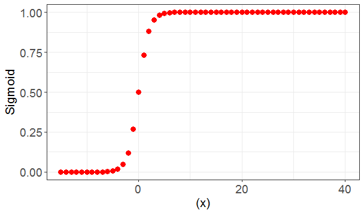
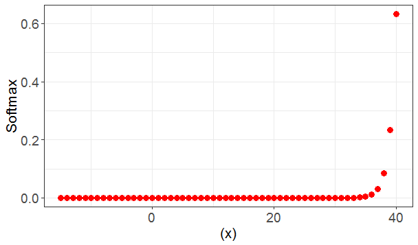

activation functions
Sigmoid function takes values between 0 and 1
$ {sigmoid} = \frac {e^x} {( 1+ e^x )} $
This is used in logistic regression.
The sigmoid graph is generated by the R code provided below.

Softmax function is used to calculate the probablities in multiple classes. Suppose we have a image of a digit. We want to calculate whether it is a 1, 2, 3, and so on. Softmax would provide the probablity for each of the classes. i.e. The probablity of the digit being a 1 , 2 , 3 and so on. The sum of the probablities would add up to 1. However if we had used the Sigmoid function, the probablities would not add up to 1.
$ {softmax} = \frac{e^x}{\Sigma e^x} $
The softmax graph is generated by the R code provided below.

The below code demonstrates both the sigmoid and softmax functions
library(ggplot2)
x = c(-15:40)
y = exp(x)
sumy = sum(y)
sigmoid = y/(1+y)
softmax = y/sumy
df = data.frame(x=x,y=sigmoid)
dfSoftmax = data.frame(x=x,y=softmax)
ggplot(df,aes(x= x,y=sigmoid)) +
geom_point(size = 3,colour = 'red') +
theme_bw() +
theme(axis.title = element_text(size=16),axis.text = element_text(size=14))+
xlab("(x)")+
ylab("Sigmoid")
ggplot(dfSoftmax,aes(x= x,y=softmax)) +
geom_point(size = 3,colour = 'red') +
theme_bw() +
theme(axis.title = element_text(size=16),axis.text = element_text(size=14))+
xlab("(x)")+
ylab("Softmax")